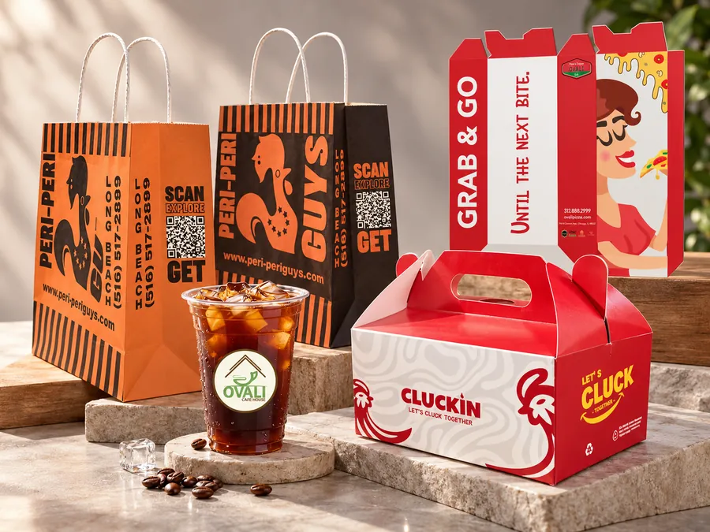

Packaging
Start with the product it needs to hold, how it will be used and the impression you want to make. Design and mockups help you review the direction before discussing a sample and production.
Bring to the conversation
Share the product dimensions, intended use and estimated quantity.
Your next step
Agree the format, artwork, sample requirements and production scope with Pines.